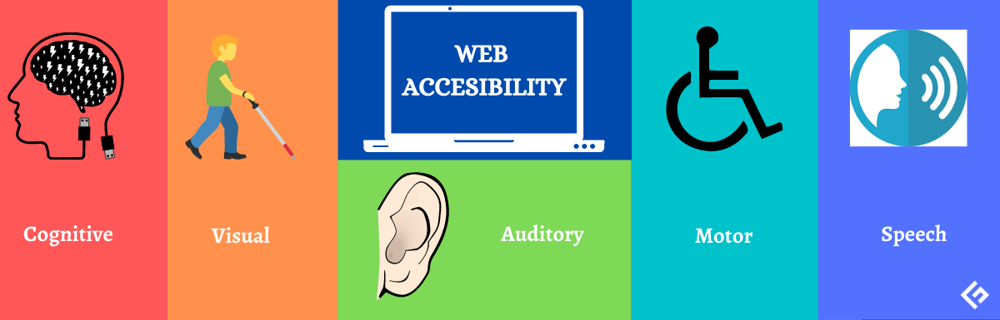

Concepto de “Accesibilidad Web”
- Concepto y objetivos de la Accesibilidad Web
La accesibilidad web tiene como objetivo lograr que las páginas web sean utilizables por el máximo número de personas, independientemente de sus conocimientos o capacidades personales e independientemente de las características técnicas del equipo utilizado para acceder a la Web
La necesidad de que la Web sea universal y accesible por cualquier persona
está presente desde el principio de la Web, ya que era un requisito
contemplado en su diseño por su creador Tim Berners-Lee.
La accesibilidad Web significa que
personas con algún tipo de
discapacidad van a poder hacer uso de
la Web. En concreto, al hablar de
accesibilidad Web se está haciendo
referencia a un diseño Web que va a
permitir que estas personas puedan
percibir, entender, navegar e interactuar con la Web, aportando a su vez
contenidos. La accesibilidad Web también beneficia a otras personas,
incluyendo personas de edad avanzada que han visto mermadas sus
habilidades a consecuencia de la edad.
Para lograr la accesibilidad, se han desarrollado diferentes pautas o guías que explican cómo se tienen que crear las páginas web para que sean accesibles.
- Limitaciones de acceso a la web
Deficiencias visuales: Entre las que se encuentran la ceguera, la visión reducida y los problemas en visualización de color.
Deficiencias auditivas: Estas deficiencias pueden ser consideradas menos limitadoras en el acceso y uso de contenidos digitales, debido a que el canal sonoro es mucho menos utilizado en interfaces web que el canal visual. Aún así, no podemos olvidar limitaciones y barreras derivadas de esta discapacidad, como es el caso del lenguaje.
Deficiencias motrices: Son las relacionadas con la capacidad de movilidad del usuario. Estos usuarios no suelen ser capaces de interactuar con el sistema a través de dispositivos de entrada tradicionales, por lo que utilizan dispositivos alternativos (Ejem: basados en voz). Deficiencias cognitivas y de lenguaje: Son usuarios que presentan problemas en el uso del lenguaje, la lectura, percepción, memoria, salud mental…